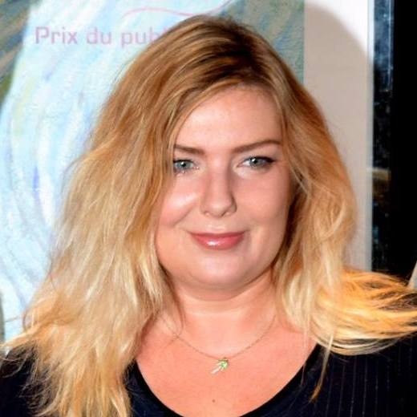

Loving Vincent
| Category | Description | Value |
|---|---|---|
| Number of Paintings | Total number of painted frames | 65,000+ |
| Production Hours | Total hours spent on production | Over 6 years |
| Budget | Total production cost | $5.5 million |
| Artists | Number of artists involved | Over 100 |
| Release Date | Date of movie release | September 22, 2017 |
| Awards | Recognition and awards received | Various nominations and wins |
The world's first fully painted film
"Loving Vincent" is a groundbreaking animated film released in 2017. Directed by Dorota Kobiela and Hugh Welchman, it's the first fully painted animated feature, bringing Vincent van Gogh's art to life through hand-painted frames resembling his iconic paintings. The movie follows a young man investigating Van Gogh's death, unraveling the artist's life and emotions through encounters with individuals from his past. Celebrated for its unique artistry and storytelling, "Loving Vincent" stands as a cinematic tribute to the legendary painter
Learn more at:
Movie Crew

As one of the directors of "Loving Vincent," Kobiela played a pivotal role in bringing the innovative concept of a fully painted animated film to life. She co-wrote the screenplay and directed the film, contributing to its artistic vision and execution.
— Dorota Kobiela
Welchman co-directed and produced "Loving Vincent." He was instrumental in overseeing the production, managing the project's logistics, and ensuring the film's artistic integrity throughout its development.
— Hugh Welchman
Ivan Mactaggart was one of the producers of "Loving Vincent." His contributions to the production process and collaboration with the directors and artists were crucial in realizing the ambitious vision of the film.
— Ivan Mactaggart
Sean Bobbitt served as the film's cinematographer. His expertise in visual storytelling and cinematography techniques was vital in translating the unique hand-painted frames into a cohesive and visually stunning animated narrative.
— Sean Bobbitt